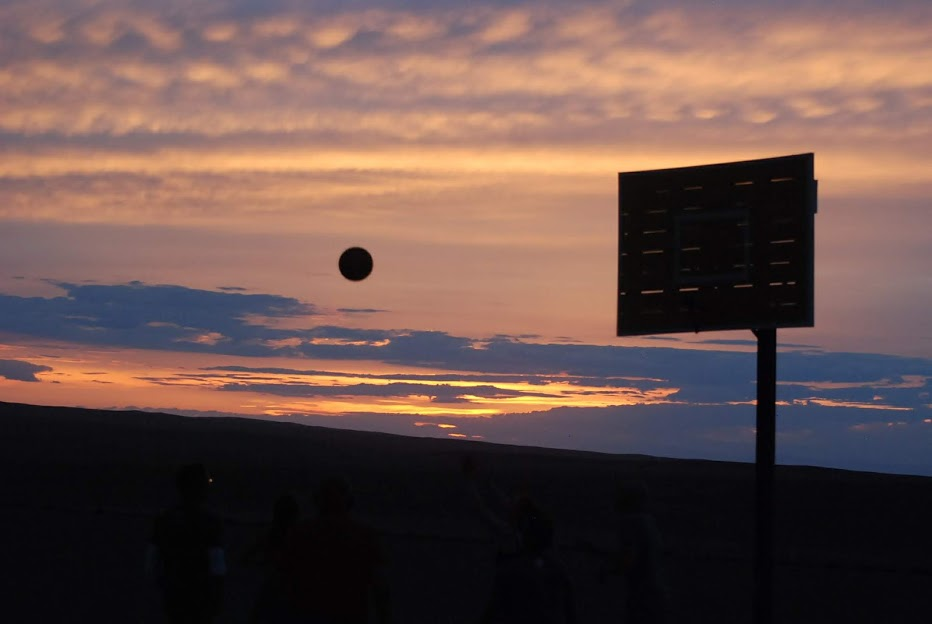

Welcome. I live here. I can bake but I won't store cookies.
Homepage Travel Writing Recipes Books Blog Films Lifestyle
I've been to a few places.
Below are the abridged transcripts of a blog I wrote from Mongolia during the summer of 2018
I’m setting up this blog to catalogue my travels in Mongolia, mainly for my friends and family back home. I may keep it up if I go anywhere else interesting afterwards but for now the purpose is simply to keep people up to date and let them know if I’m still alive.
On the off-chance that you stumble on this without being given the link, you are still most welcome. While preparing for this journey, I’ve found other people’s blogs so helpful, especially for figuring out what to bring on a trip like this.
I should probably talk about the agenda, so you know a little of what to expect. My mother is my travelling partner for this trip. We will refer to her simply as "mum."
We leave home on Thursday, June 28th. We’ll be flying into Istanbul, taking a connecting flight on to Seoul and staying there 2 nights. After that we fly to Ulanbataar and spend the night in the city. In the morning we begin our journey into the Gobi.
We will be staying both with nomadic families and in ger camps - campsites with huge tents and sometimes a main building/tent to dine in. Occasional running water, internet unlikely. I’ll update whenever I possibly can. I’m not sure how bad things will be on the connectivity front, as a neighbour’s sister who visited Mongolia in the early 90s recounted to me her stay with a nomadic family. They had a son who was studying in the US and she asked how they kept in touch. One of the eldest members of the tribe, a wizened old man in the corner scoffed at her and said “with the internet of course!” I would be nearly 10 years before my own family installed a dial-up connection.
This in mind, it’s probably best not to make any assumptions about what I’ll have access to until I arrive.
After nearly 3 weeks of travelling rural Mongolia and the Gobi, visiting sites such as pre-soviet Buddist monasteries, dinosaur bone excavation sites and hot springs, we return to Ulanbataar and fly back to Istanbul. We stay one night there before returning home.
Thinking ahead (or so we thought,) we booked a 5-star hotel for the final night in Istanbul as we know we’ll be in desperate need of comfort. Unfortunately, it wasn’t until we had booked that we suddenly thought, “What are we going to look like walking into a 5-star hotel after 3 weeks in the desert?” We’ll be brought out the back, hosed down and shuffled in the service elevator I suppose.
In which I travelled to Seoul and stayed for two days. Here's that.
We’ve been in Ulanbataar for a night and a day now, and we leave for the countryside tomorrow morning. Our hotel is nowhere near as high-tech as the one in South Korea but it is still very comfortable and clean. So far, the weather in the city has been very changeable.
We got some much needed rest last night but it seems like 8am is the usual time to get up and meet the fellow travellers in our group. Fortunately for us, we are a little bit jet lagged still so time is pretty much arbitrary and we’re just sleeping any chance we get.
We took a tour of the city today and the first thing I noticed was that the vast majority of cars are Toyota Priuses. A minimum of every five cars we passed, there would be another Prius. I fell asleep on the bus counting them like sheep.
According to our guide, Toyota struck some kind of deal with Mongolia to sell them very cheaply, despite them not really being suitable for the landscape.
The first place we visited was the Gandan Tegchenling Monastery, where the 26.5 metre tall statue of Avalokiteśvara, the Bhuddist deity of compassion stands. Photos are forbidden with the statue and it would be disrespectful to photograph praying monks either, but the grounds are beautiful and I can show you those.
Prayer drums outside Gandan Tegchenling Monastery
Prayer drums outside Gandan Tegchenling Monastery
Monastery grounds
From the monastery, we moved on to Bogd Khaan’s winter palace.
Bogd Khaan was the last of his kind and served as both a spiritual and political leader to the Mongolian people as they declared independence from the Qing dynasty.
Two years after his death, the palace was converted to a museum. Once again, photography inside was forbidden but the grounds are a beautiful display of a Chinese architecture style which uses wooden puzzles to construct a structurally sound building without using a single nail (or so we’re told.)
Winter Palace of Bogd Khan
From the museum, we returned to the main square in Ulanbataar – Sükhbaatar Square. An enormous open space right in the centre of the city, it houses two statues: one of Damdin Sükhbaatar (and his horse) who led the Outer Mongolian revolution of 1921 and one of Chinggis Khan himself, affectionately referred to by locals as "Mister Chinngis"
Statue of Damdin Sükhbaatar, featuring the Blue Sky Hotel skyscraper behind
Statue of Chinggis Khan
So because it’s something that has always confused me, allow me to explain the Chinggis/Genghis thing as our guide did.
He was originally called Genghis, which means “blacksmith.” When he rose to power, his title simply changed to Chinggis, meaning “ruler.”
This differs to what I’ve read online however, which is that Genghis is simply an anglicisation of Chinggis. I’m more inclined to believe a local, but for anyone who is confused, the correct title now is definitely Chinggis.
The final place we visited on our tour was Zaisan Hill. By this point, the jet lag was getting to us and we were already pretty tired. The hill tour involved a 612 step flight of stairs to the top.
We felt extremely proud of ourselves for making it so far, until we were passed out by an elderly Mongolian lady and then an entire wedding party in stilletos.
After meandering back to our bus, we stopped off at a supermarket to stock up for the journey ahead.
We leave for the countryside around 8:30am tomorrow, and the guide was clear that internet and electricity will be scarce, so I really don’t know what that will mean for the blog.
In any case, I’ll keep writing posts as I go and if I have to wait for them to be published en masse upon our return to the hotel on the 13th, so be it.
It’s day 2 in the desert at the time of writing. There was no internet in our camp last night so I’m not sure when this will end up being posted, but the desert is everything I’d hoped for and more.
The landscape is vast and varied. Every so often there will be little patches of green seemingly out of nowhere. The five main kinds of livestock here are sheep, goats, camels, cows and horses. All animals are kept semi-wild in that they are free to wander the desert, but rounded up in the morning (by motorcycle usually) for milking, shearing etc. Because the animals are effectively free range, they’re dotted everywhere and we’ve often had to stop the van to allow them to cross.
There is lots of life but also lots of death here. We’ve been driving past carcasses of increasing size and phase of decomposition, along with some vultures circling. Aside from the very fresh casualties, I’ve found some bones which I’m going to try to keep. It is forbidden to take dinosaur for obvious reasons but bones but cow and sheep bones are not a rarity so it’s fine to collect these. In fact, a traditional Mongolian tabletop game is played with sheep bones, and gift sets are sold in shops for tourists to bring home.
Our ger camps so far have been a extremely pleasant. No internet but electricity (sometimes) and modern bathroom facilities nearby, and very cosy, clean gers. The beds are mattresses of straw but I’ve been sleeping in my sleeping bag on top of the mattress so I'm finding it very snug despite the cold that descends on the desert at night.
Update 1: I climbed the Khongoryn Els sand dune.
Update 2: I got food poisoning.
Having narrowly avoiding evacuating my stomach in some sacred religious memorial grounds at Ongiin Khiid monastery, I (in a fit of desperation) tasted some water from a shrine that is supposed to cure stomach upsets.
To nobody's surprise, drinking creek water proved unhelpful.
I’ve been nibbling on dry crackers and I was kindly given some homebrewed schnapps by a Swiss girl in our group who claims it cures all illnesses. From the taste of it, it certainly will kill any bacteria in my system, perhaps taking some of my vital organs with it but I do actually feel a little better. Thanks Marina!
Two days ago we had the very fun and apparently pretty rare experience of driving directly into an enormous sandstorm. Inside it was a little darker but altogether not too dense or difficult to see, a bit like driving through golden-yellow fog. We kept all the windows shut tight so fortunately the vans were kept relatively sand free. Our guide told us that he had never seen anything like this in all his years of touring the Gobi. (The man is about 19, I don't know how many years this actually amounts to.)
That night, we got to see a second natural phenomenon when a heat lightening storm began in the distance.
Above us the sky was dark and full of stars – the milky way was even brightly visible. On the horizon, the sky flashed white and yellow for hours as we all lay in the sand watching.
Yesterday, we visited the nearby Bayanzag or “Flaming Cliffs” where paleontologist Roy Chapman Andrews discovered dinosaur bones and eggs that can now be seen in museums around the world.
The whole structure is a sight to behold, and glows fiery red in the sunset - hence the name. I'm glad I got to enjoy it while I was still feeling well.
I spent most of today in bed nursing my sick stomach so now I’m praying that schnapps will either kill or cure me. Updates to come, in the latter case.
Today began with a trek through Yolyn Am, a glacier gorge in the Gurvan Saikan Mountains. The toilets here were the worst yet and running from them was all that propelled me half way along the hike. Aside from that, it was probably the most beautiful place I’d ever been. I got a strong sense of deja vu when I began the hike, like I’d been there in a dream before. I never wanted to leave.
Marmots enjoying the sun Local souvenir vendor
After the hike, we had a 7 hour drive through very bumpy desert terrain. I enjoy driving so I didn’t mind at all but a few people were quite carsick.
I found some more bones today, as well as a rams horn that was scavenged for me by a fellow traveler. I seem to have become known as the bone collector so people keep bringing me bits of carcass that they find.
Tomorrow, we are hiking barefoot up sand dunes and riding camels. I’m not going to ride as I’ve done it before and it’s an extra 20,000т (not very expensive but also not a new experience.) For those not camel riding, we get to visit a nomadic family at home and speak to them about their way of life. I'm much more excited about the opportunity to make new friends, so it wasn't a difficult choice.
We’re about halfway through the trip and I’ve finally found a café with wifi to post the last few blogs. I’ll update again as soon as possible.
I was cured of my food poisoning by some authentic Mongolian barbecue with potatoes. The nomad family we stayed with very obligingly (if with a little bemusement) heated up some 7up over their stove for me too.
We are out of the desert now, and currently traveling through the grassland and steppe, which is where we camped last night, out in the open near the family's own ger. Today we’re traveling to Tsenkher Hot Springs and everyone is looking forward to getting clean after camping.
Right now I’m in Kharakhorum, an ancient city but modern enough to have a sliver of internet. I'm going to dump all my recent writing and then go explore.
So the last blog was pretty rushed, obviously. I’m preparing this one in the hope that when we return to Kharakhorum tomorrow I’ll be able to upload it quickly. The date of writing is July 10th 2018.
Last night and tonight we are staying at Tsenger Hot Springs in the grassland region. A sudden change from desert landscape, it’s very lush and green here. This is a real 5-star ger experience, complete with the traditional indoor stove and incredibly comfy beds.
After a long shower and a soak in the hot spring pool, we fell asleep last night to the scent of woodsmoke and the flicker of firelight on the inner walls of the ger. The landscape is beautiful, with verdant, rolling hills and forest all around. Birds of pray soar overhead with the sane regularity as pigeons elsewhere.
Kites soaring above the camp Tsenkher Hot Spring - Source
To start the day, we went on a hike through the surrounding woodlands to the source of the hot springs. The water comes out at about 70°C from the source and trickles into a nearby pool where it is then piped back to the resort baths. The smell of sulphur at the source apparently wasn’t enough for some locals, who brought along a box of eggs and proceeded to cook them in the spring pool. I didn’t try any.
Today we finally got to ride wild horses – I think this is the part of the trip many of us have been most anticipating. The horses are named by their colour and age. My horse was Brown Ten. All horses in Mongolia are wild, and nomads simply use them for their purposes before setting them free again. However, certain herds belong to certain areas and it’s common for a family to have a herd that they are familiar with or have trained to some degree. Naturally, these reasonably tame horses are the ones used for visitors.
Finally, our journey through Mongolia has come to an end. Back in the hotel in Ulanbataar, we’re packing up and preparing for a morning flight to Istanbul. As I finally have a reliable connection I’ll fill you in on the last two days of the tour.
Wednesday morning we departed from the hot springs and headed back to Kharakhorum for a proper tour of the ancient walled city. We made a visit to the Kharakhorum Museum, where we learned about the city’s long history of being destroyed and rebuilt.
The original capital of the Mongol State as declared by Chinggis Khan himself, Kharakhorum was destroyed first by Manchurians in the 14th century, then by Stalinist Communists because it was built around the Erdene Zuu Khiid Monastery – the biggest monastery ever built in Mongolia. Rebuilt once again, this monastery is still active today with over 100 monks still living there.
Locals in traditional dress outside the walls of the Erdene Zuu Khiid Monastery The Dalai Lama temple in Erdene Zuu Khiid
After the visit to Kharakhorum, we headed to Khustai National Park where we set out at dusk to look for Takhi, or Przewalski Horses. These are the genetic ancestors of the modern day horse, and are genetically distinct.
 A herd of Takhi, sighted from a distance
A herd of Takhi, sighted from a distance
Today then, we returned to the hotel in Ulanbataar. Finally this evening we had our last meal with our group and said our goodbyes. Our flight to Turkey is at 11am tomorrow morning which means a 6am rise to get to the airport in time. I’ll hopefully get to do an Istanbul blog before I get home.
I won't give this section its own page, seeing as it is quite short.
I’m home, I’ve just been catching up on sleep after a long trip home. On Saturday our flight from Ulanbataar was delayed by four hours. Fortunately, we didn’t have to rush to make a connecting flight. Less fortunately, it meant we missed out on all of our time in Istanbul.
We arrived in Istanbul shortly after 11pm and had to get a taxi straight to our hotel, concerned that they would have given away our room. They hadn’t, but the staff were bemused to find that we had no luggage.
It turns out Turkish Airlines had taken some initiative and checked our baggage through the whole way home to save us time checking in the following day. This was fantastic but unfortunately they neglected to tell us they were doing so. We had no clothes to change into and no toothbrushes after 22 hours of travel.
Just as well then that we had spent two weeks in the desert and learned to be resourceful.
The view from our hotel window in Ulanbataar
"Construction"
The view from atop a mesa
Gobi Landscape
Sunset over ger camp

Desert basketball
Shed and trailor belonging to Nomads
Supermarket, Eastern Gobi
Monk takes a phone call, Choir Monastery
 Camels, Khongor Dune Bayandalai
Nomad mother braids her daughter’s hair, Grassland (Nomad Family Visit)
Mutton Preparation, Grassland (Nomad Family Visit)
Barbecue Boys, Grassland (Nomad Family Visit)
Horseman, Grassland
Locals in traditional dress, Kharakhorum
Local man in traditional dress takes a selfie, Kharakhorum
Dragon temple guardian, carved from wood
The landscape surrounding the source of Tsenkher Hot Springs
Foliage, Steppe
A dried cow bone sitting atop a treestump
Steppe landscape
Motorcycles belonging to Nomads
Mister Chinngis presiding over Sukhbataar Square
Camels, Khongor Dune Bayandalai
Nomad mother braids her daughter’s hair, Grassland (Nomad Family Visit)
Mutton Preparation, Grassland (Nomad Family Visit)
Barbecue Boys, Grassland (Nomad Family Visit)
Horseman, Grassland
Locals in traditional dress, Kharakhorum
Local man in traditional dress takes a selfie, Kharakhorum
Dragon temple guardian, carved from wood
The landscape surrounding the source of Tsenkher Hot Springs
Foliage, Steppe
A dried cow bone sitting atop a treestump
Steppe landscape
Motorcycles belonging to Nomads
Mister Chinngis presiding over Sukhbataar Square